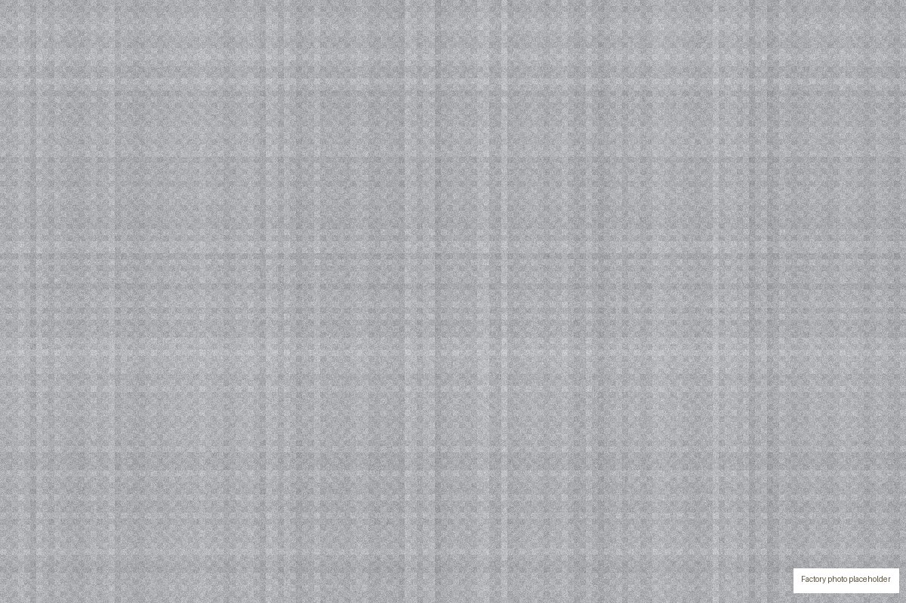
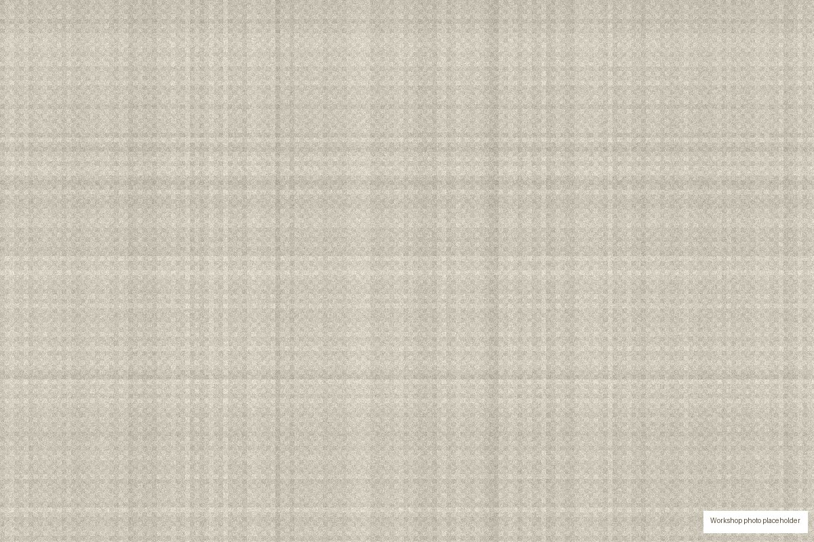

Tongling Fulu Weaving Co., Ltd. specializes in the production of linen textile products. Located in Tongling, a historic flax production base in China, we are a production-oriented enterprise focused on pure linen, linen blends and home textile fabrics.
Our facility houses large rapier looms and extra-wide looms, supported by a complete team covering management, production, design, quality control, sales and after-sales service. Our products are exported to Europe, America, Japan and Southeast Asia.

